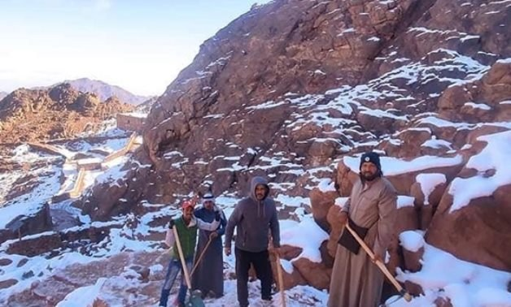
Mount Catherine — the Roof of Egypt
The source identifies Mount Catherine (Gebel Katherina) as Egypt’s highest mountain at 2,629 metres. Its jagged Precambrian volcanic and granite terrain forms part of the high-altitude Sinai massif.
A cinematic digital guide to the high mountain landscape around Saint Catherine, Mount Catherine, Mount Sinai, and Saint Catherine’s Monastery—built from the supplied historical source and image collection.
Saint Catherine sits in the high Sinai massif, beside the religiously iconic Mount Sinai. The supplied history describes a landscape whose story moves from prehistoric shelter and ancient mining to Christian monasticism, Islamic protection, modern conservation and UNESCO recognition.

The source identifies Mount Catherine (Gebel Katherina) as Egypt’s highest mountain at 2,629 metres. Its jagged Precambrian volcanic and granite terrain forms part of the high-altitude Sinai massif.
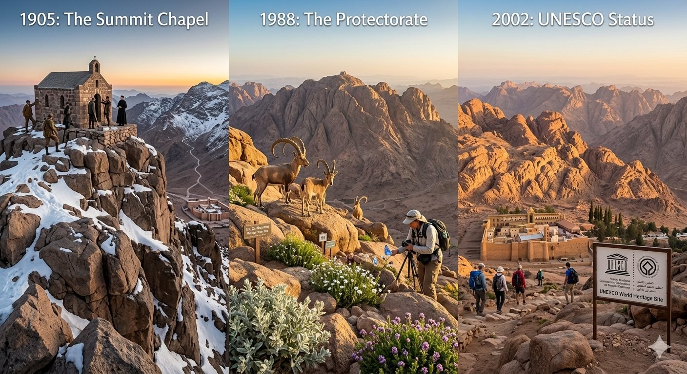
Winter temperatures can fall below freezing and snow can blanket the summit. The slopes are protected under Saint Catherine National Park and host rare wildlife including the Sinai baton blue butterfly and Nubian ibex.
From early human presence to modern heritage protection, the story is layered rather than linear.
The summit is more than a viewpoint: the supplied source connects it to geology, pilgrimage, scientific observation, rare ecology and a demanding mountain route.
Massive Precambrian volcanic and granite rocks, shaped by major fault lines over millions of years.
Among Egypt’s coldest winter environments, with freezing temperatures and occasional heavy snow at the peak.
A small Orthodox chapel dedicated to Saint Catherine was built at the summit in 1905, alongside a meteorological research station.
The source highlights the Sinai baton blue butterfly and Nubian ibex among the rare wildlife of the protected slopes.
A high mountain cave contains red-pigment paintings and ancient graffiti, evidence of human presence thousands of years ago.
The strenuous summit route is described as offering broad views across the Sinai Peninsula, including the Gulf of Aqaba and Gulf of Suez on clear days.
The source frames Saint Catherine’s history through successive administrations while emphasizing the continuity of the monastery and its protected religious life.
Founded under Justinian; established architecture, defensive walls, and early Christian administration.
The region came under Muslim rule; the source highlights the Ashtiname tradition and a Fatimid-era mosque inside the monastery walls.
Relations with Islamic rulers preserved the monastery’s autonomy and protected it from regional conflicts.
The monastery maintained semi-autonomous status under Ottoman sovereignty and imperial decrees (firmans).
Integrated into modern Egyptian governance, with modernization and infrastructure growth; the source notes the Jebeliya Bedouin community’s long relationship with the monastery.
The supplied history describes a monastic tradition beginning with hermits and ascetics, followed by imperial construction, centuries of changing political rule and continuing protection.
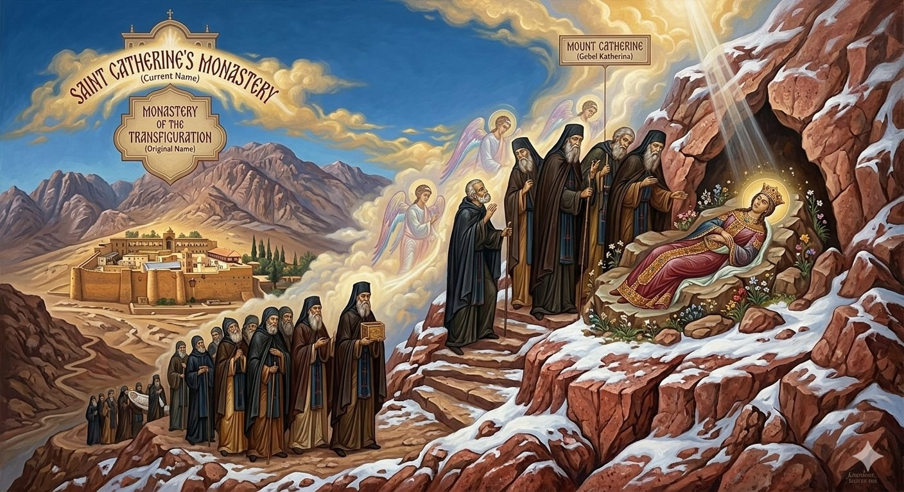
Originally known as the Monastery of the Transfiguration or Monastery of Mount Sinai, the complex was later renamed after Saint Catherine of Alexandria following the reported discovery of her relics nearby.
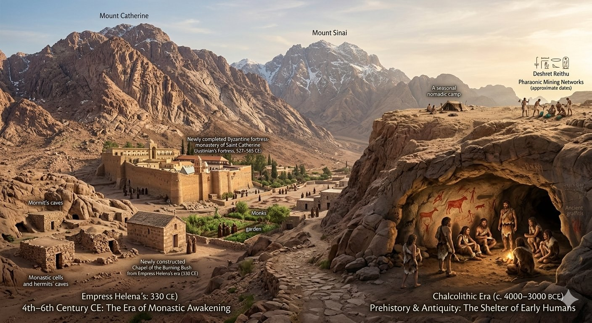
The source records the Biblical traditions of Moses and the Burning Bush, the Christian monastic heritage, and the Ashtiname tradition associated with Prophet Muhammad’s protection of the monks.
All supplied images are incorporated across the experience, pairing visual storytelling with the historical sections they best support.
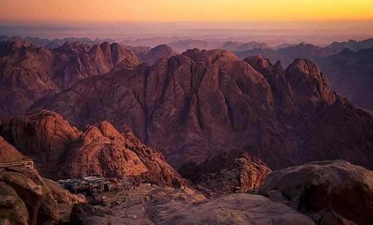
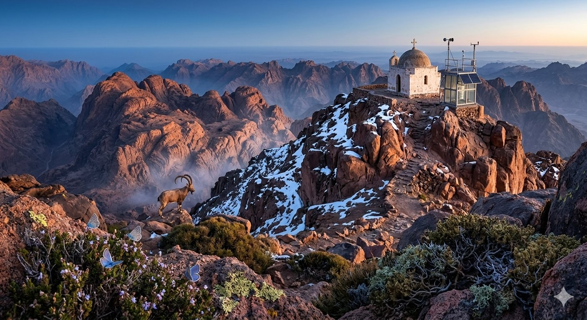
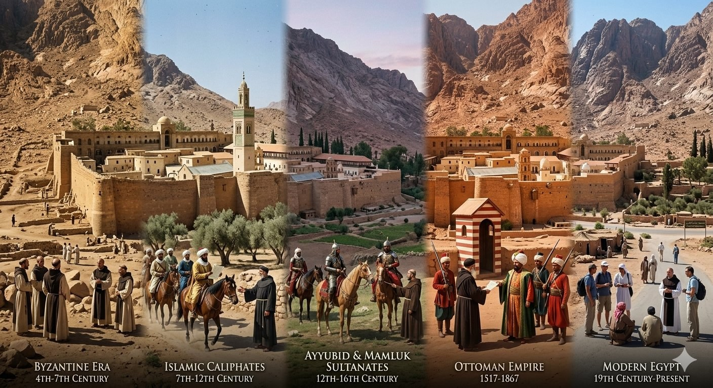
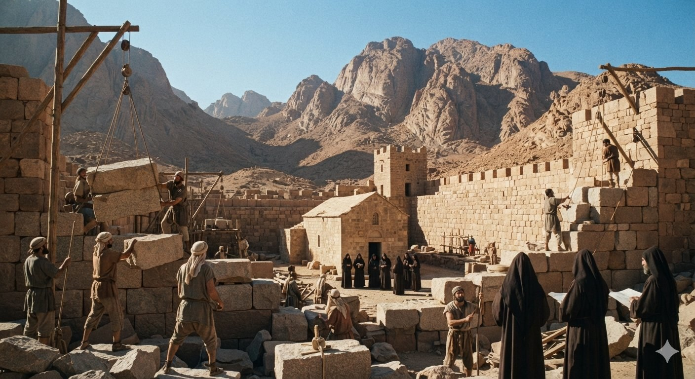
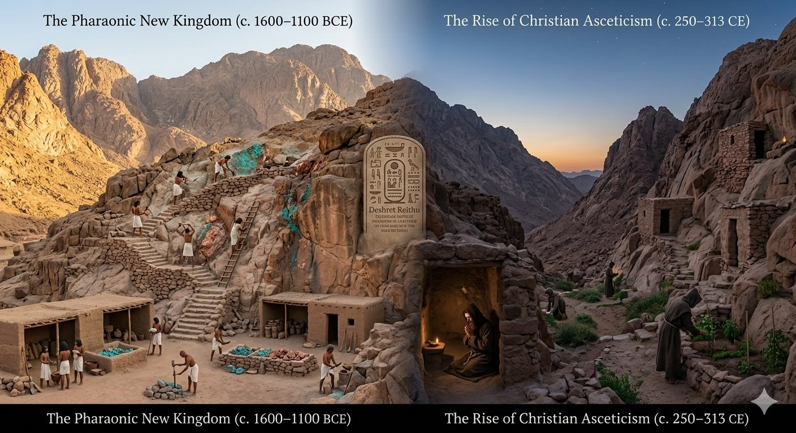
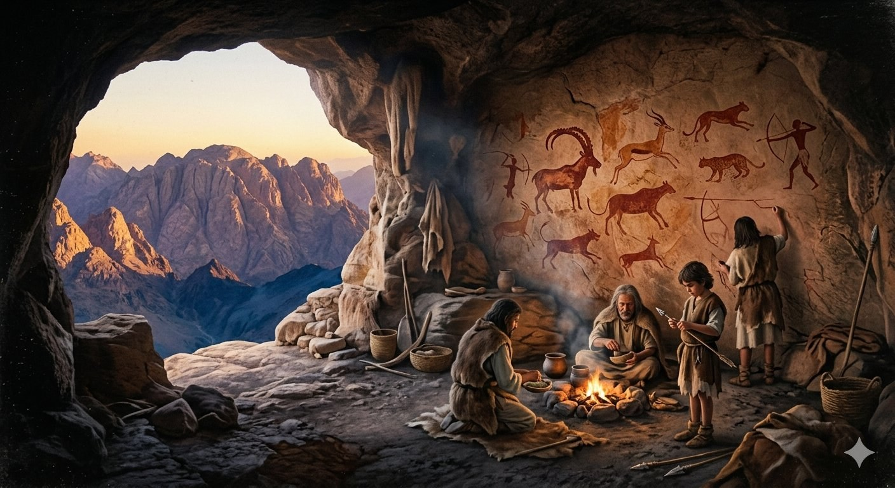
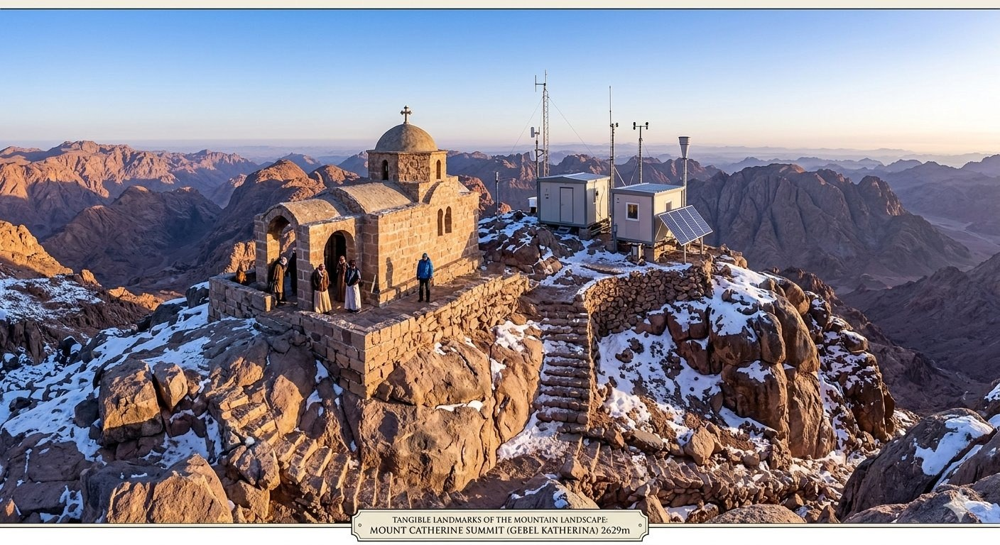
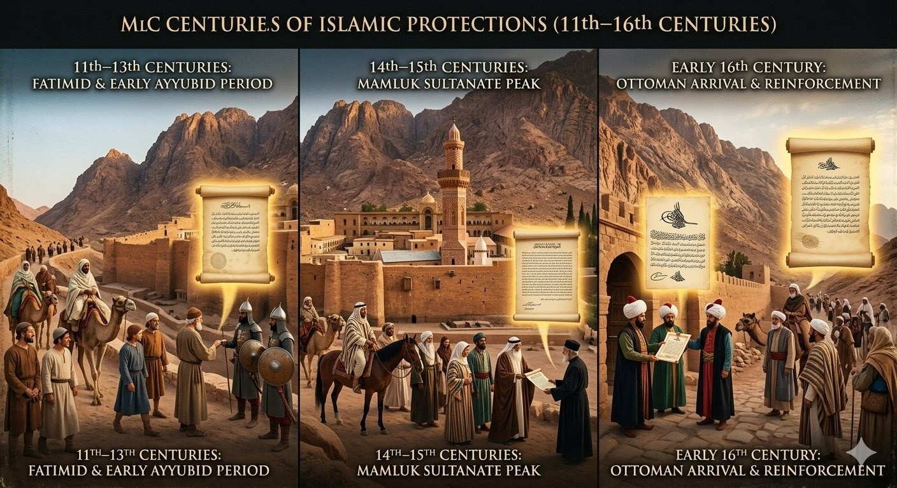
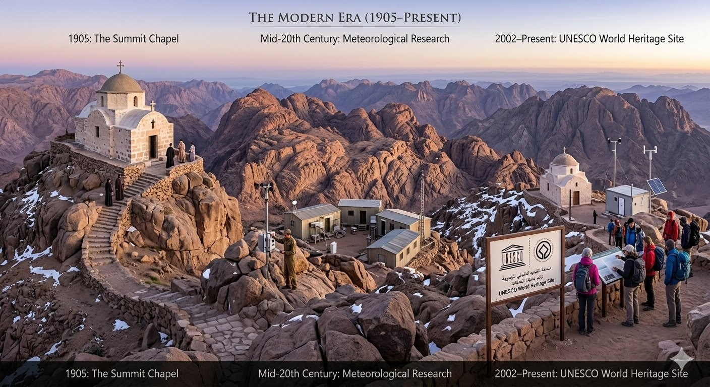
The supplied source describes the climb as a strenuous 10.5-kilometre trek, primarily following the zigzagging Shaq Mousa path from the valley base into high-altitude alpine terrain.
Strenuous / hard; requires excellent physical fitness, sure-footed scrambling across granite scree and acclimatization.
The source states that a certified Bedouin guide from the local Jebeliya tribe is mandatory because of the rugged, unmarked terrain and border proximity.
Quiet, panoramic summit views across the Sinai Peninsula, with the source noting the Gulf of Aqaba and Gulf of Suez on clear days.